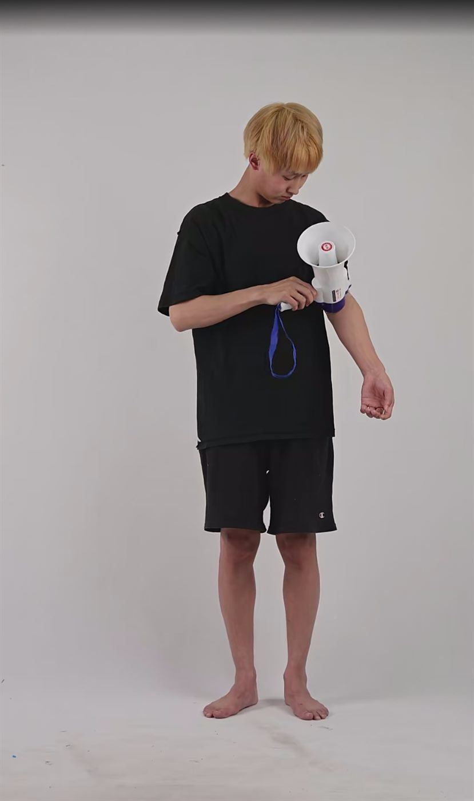
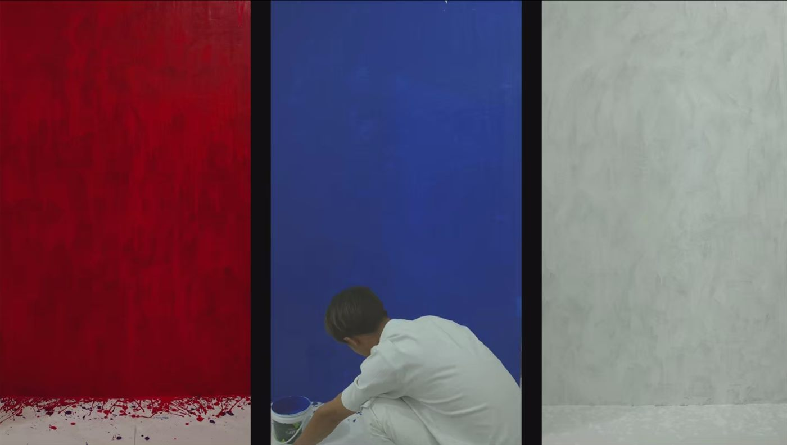

05《器之下，肤之上》Beneath the Device, Above the Skin
2023 / Performance video / 12'49"
Home / Works / Project
作品按照当前主页阅读顺序重新组织。每个重点项目进入第三级详情页，包含横向多图、作品信息与中英文本。
Works are reorganized by the current homepage order. Key projects open into third-level detail pages with horizontal image sequences, project data, and bilingual texts.
 01
01
2026 / Performance video installation / 16'04"
 02
02
2024 / Performance video / 3'19"
 03
03
2025 / Performance video
 04
04
2025 / Performance video

052023 / Performance video / 12'49"

062023 / Performance video / 1h 14'45"